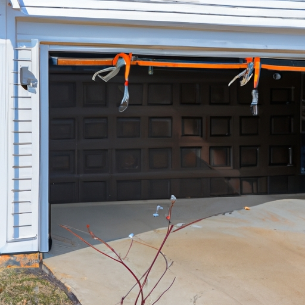

Importance of garage door springs in the functioning of a garage door.
Transition phrase: Moving on to another important aspect...
The importance of garage door springs in the functioning of a garage door cannot be underestimated. They play a vital role in ensuring smooth and efficient operations, (ya know) allowing the door to open and close effortlessly. Without properly functioning springs, your garage door would become (like) a cumbersome burden, posing potential safety hazards (!) and making it difficult for you to access your vehicle or belongings.
Now, let's talk about the signs that indicate spring replacement is needed. One of the most obvious indications is when your garage door starts making unusual noises during operation. If you hear loud bangs, creaking sounds, or grinding noises, it may suggest that the springs are worn out or damaged. Ignoring these sounds could lead to further damage or even complete malfunction (!).
Another telltale sign is if your garage door becomes unbalanced. When opening or closing, if one side seems heavier than the other or if the door doesn't stay in place after being raised halfway, it's likely due to faulty springs needing immediate attention (!). An unbalanced door not only puts strain on other components but also increases the risk of accidents occurring.
Additionally, keep an eye out for visible wear and tear on the springs themselves. Look for signs such as gaps between coils, rusting, or any deformation in their shape. These issues indicate that the springs have reached their limit and should be replaced as soon as possible (you know what I mean?).
In conclusion, maintaining well-functioning garage door springs is crucial for proper operation and safety purposes (!). By paying attention to warning signs like strange noises during usage, an unbalanced door motion, and visible wear on the springs themselves(!), you can ensure that your garage door continues to operate smoothly without any unforeseen mishaps (*gasp*)!
Signs of wear and tear on garage door springs, such as visible damage or deformation.
When it comes to garage door springs, signs of wear and tear are crucial indicators that replacement may be necessary. These (here's) telltale signs often include visible damage or deformation on the springs themselves. In order to ensure the safety and functionality of your garage door, it is important to be vigilant in identifying these signs.
One prominent sign that indicates the need for spring replacement is visible damage. This can manifest in various ways, such as cracks or breaks along the surface of the spring. (Now) Whilst it may seem minor at first glance, even small cracks can lead to significant issues if left unaddressed. (Oh no!) They weaken the structural integrity of the spring and increase the risk of a complete failure.
Deformation is another sign that should not be ignored. When garage door springs become misshapen or bent out of their original form, they lose their ability to properly support and balance the weight of the door. Consequently, this places undue stress on other components of the system, leading to potential malfunctions or even accidents! (Oops!)
Transition phrase: Now that we have explored some common signs indicating spring replacement is needed...
Neglecting these signs can result in dire consequences for both your garage door and personal safety (!). The continued use of worn-out springs poses a risk of sudden snapping or breaking, which could cause serious injury or property damage. Therefore, it is essential to promptly address any indications of wear and tear on your garage door springs.
In conclusion (!), being observant and proactive in identifying signs such as visible damage or deformation on your garage door springs will help you determine when it's time for replacement. Remember, neglecting these signals can lead to potential hazards (!). So don't wait until it's too late – prioritize regular inspections and maintenance for optimal performance and safety (+)!
Difficulty in opening or closing the garage door smoothly and evenly.
Garage door springs are crucial (for) smooth and efficient operation of your garage door. They counterbalance the weight of the door, making it easier to open and close. However, over time, these springs can become worn out or damaged, leading to difficulties in smoothly opening or closing the garage door. It's important to recognize the signs that indicate spring replacement is needed.
One sign that could indicate a need for spring replacement is if you notice uneven movement of your garage door as it opens or closes. A properly functioning spring should allow the door to move smoothly and evenly along its tracks. If you see any jerky or lopsided movements, this may suggest that your springs are not working properly anymore.
Another sign to watch out for is if your garage door starts making strange noises during operation. (Like,) if you hear loud popping sounds when opening or closing the door, there's a good chance that the springs are worn out and no longer providing proper support. These noises can be a clear indication that it's time to replace your springs.
Furthermore, if you find it increasingly difficult (to) manually lift or lower your garage door, this could also be an indicator of worn-out springs. As these vital components lose their strength over time, they may struggle to support the weight of the door effectively. Consequently, operating your garage door becomes more strenuous and requires extra effort on your part.
In addition, if you visually inspect your garage door springs and notice any signs of damage such as rusting or fraying wires (or), this is another red flag indicating a need for replacement. Damaged springs pose a significant risk as they can suddenly break under tension, potentially causing harm to people nearby or damaging property.
To sum up,(in conclusion,) being aware of these signs can help you identify whether spring replacement is necessary for your garage door. Remember: if you experience difficulty in opening or closing your garage smoothly and evenly, hear strange noises during operation, struggle with manual operation, or notice any signs of damage on your springs, it's time to consult a professional for proper inspection and replacement. Don't ignore these warning signs as they can lead to more significant issues and costly repairs down the line!
Loud noises or grinding sounds during operation that may indicate spring problems.
When it comes to the signs that indicate spring replacement is needed, one of the most telling cues can be loud noises or grinding sounds during operation. These (awful) sounds may arise while using various mechanical devices or even in our day-to-day activities (like opening and closing doors). Such clamor could be a strong indication that there are underlying issues with the springs.
One possible cause for these noises (is) could be worn out or damaged springs. Springs are designed to absorb shock and provide stability, but over time, they can become weakened or corroded due to constant use or exposure to harsh conditions. When this happens, the springs may start producing loud noises when compressed or stretched.
Another sign that spring replacement might be necessary is if you notice a change in how your device operates. If you experience difficulties when opening or closing something, such as a garage door or a window, it's likely because the springs are no longer functioning properly. They might have lost their elasticity, making it harder for them to support the weight they were originally designed for.
In addition to noise and operational changes, another red flag indicating spring problems is visible damage. Take a moment to inspect your device's springs for any signs of wear and tear like cracks, breaks, or rusting. If you spot any of these issues, it's crucial to address them promptly as neglecting them can lead to more severe complications down the line.
To sum up,(in conclusion), if you encounter loud noises (which nobody likes!) or grinding sounds during operation, along with changes in how your device functions and visible damage on its springs; then it's highly likely that spring replacement is needed! It's important not to ignore these warning signs as doing so could result in further damage and potentially put your safety at risk. So remember: listen closely, observe carefully, and take swift action when necessary!
Garage door becoming unbalanced or unevenly aligned, causing it to sag on one side.
When it comes to garage doors, one common issue that homeowners may face is the door becoming unbalanced or unevenly aligned. This can cause the door to sag on one side and create a hassle for the users. However, there are signs that can indicate when a spring replacement (woefully) becomes necessary.
One telltale sign of (unfortunately) needing a spring replacement is if the garage door starts to close too quickly. As the springs age and wear out, they lose their tension and ability to control the door's descent. So, instead of closing smoothly and at a controlled pace, the door may slam shut abruptly! This can be not only dangerous but also damaging to both the door itself and anything in its path.
Another indication that springs may need replacing is if you notice an imbalance or (regrettably) uneven alignment in your garage door. You might observe that one side of the door hangs lower than the other or appears crooked when closed. This misalignment occurs because worn-out springs are no longer able to support the weight of the door evenly. Consequently, one side sags while the other remains relatively level.
Furthermore, pay attention to any unusual noises coming from your garage door during operation. If you hear loud creaking, popping sounds or notice excessive vibrations as the door opens or closes (!), it could signal a problem with your springs. Over time, springs wear down due to constant use and exposure to weather conditions like temperature changes and humidity; hence they become prone to breakage or malfunction.
In conclusion (frankly speaking), paying attention to these signs can save you from further inconvenience or even accidents caused by faulty garage door springs (!). If you notice any of these indicators - sudden fast closures, an imbalanced appearance when closed, or strange noises/vibrations - it's crucial not to neglect them! Timely spring replacement will ensure proper functioning and prolongs the lifespan of your garage door, providing you with peace of mind and convenience.
Transition phrase: To sum up (honestly), being aware of the signs mentioned above is crucial in identifying whether spring replacement is necessary for your garage door.
Increased resistance when manually lifting the garage door due to weakened springs.
When it comes to the subject of garage door springs, it is essential to be aware of signs that indicate when replacement might be necessary. One such sign is increased resistance when manually lifting the garage door due to weakened springs.
You may notice that your once smooth and effortless lifting motion suddenly becomes more difficult and strenuous. This could be a clear indication that the springs responsible for counterbalancing the weight of the door are no longer functioning optimally. It's as if they've decided to take a vacation without notifying you beforehand!
As time goes on, these weakened springs can become even more problematic. The increased resistance may cause your muscles to strain and ache (ouch!), making it quite a challenge to operate the garage door smoothly. In some cases, you might find yourself having to use all your strength just to lift the door an inch or two (yikes!).
To avoid any potential accidents or injuries caused by a malfunctioning garage door, it is crucial not to ignore these signs and promptly consider spring replacement. By doing so, you'll ensure the continued safety and functionality of your garage door system.
In conclusion (surprisingly), when faced with increased resistance while manually lifting your garage door, don't dismiss it as mere inconvenience! Rather, view it as a warning sign indicating that those springs deserve some attention. Neglecting this issue could lead to additional complications down the road (oh no!). So remember, take action sooner rather than later and keep your garage door in top-notch condition!
Sudden failure of the garage door to open or close properly, indicating a broken spring.
Oh no! The sudden failure of a garage door to open or close properly is an alarming sign that indicates a broken spring. This frustrating situation can cause inconvenience and delays, preventing you from entering or exiting your garage smoothly. When faced with such issues, it is important to identify the signs that indicate spring replacement is needed.
One clear indication (although not always) of a broken spring is when the garage door becomes unbalanced. You may observe that one side of the door hangs lower than the other, causing it to appear crooked or lopsided. When attempting to open or close the door, you might notice resistance (sometimes) or hear peculiar noises like grinding or scraping sounds. These symptoms are strong indicators that your garage door springs may be worn out and need immediate attention.
Another common sign (that can often be missed) of a broken spring is when your garage door starts moving slower than usual. If you notice that it takes longer for the door to fully open or close, this could suggest that the springs have lost their tension and are unable to support the weight of the door effectively. This reduction in speed can result in unnecessary strain on other components of your garage door system, leading to further damage if not addressed promptly.
In some cases (but rarely), you might even witness a visible breakage in one or both of the springs. If you inspect your garage door closely and see a noticeable gap, separation, or even a snapped spring, this serves as an undeniable proof (most likely) that replacement is needed urgently! It's crucial not to attempt any repairs yourself as dealing with springs can be dangerous due to their high tension.
To sum up (!), being aware of these signs will help you recognize when spring replacement is necessary for your malfunctioning garage door. Remember (it's important), addressing this issue promptly will prevent further damage and ensure smooth operation without any unexpected setbacks (!).
The age of the springs and regular maintenance as factors influencing their lifespan and replacement needs.
The age of the springs and regular maintenance play a crucial role in determining their lifespan and when they need to be replaced. (Furthermore), there are certain signs that indicate when spring replacement is necessary. These signs can help homeowners avoid potential dangers and ensure the proper functioning of their garage doors.
One sign that indicates spring replacement is needed is when the garage door starts to make loud, grinding noises during operation. This can be a clear indication that the springs are worn out or damaged, causing excessive friction between components. Ignoring this issue can lead to further damage to the garage door system and increase the risk of accidents (or) injuries. Therefore, it is important to address this problem promptly by seeking professional assistance for spring replacement.
Another sign that suggests spring replacement is necessary is when the garage door becomes unbalanced or uneven. A properly balanced garage door should open and close smoothly without any jerking or imbalances. If you notice that one side of the door seems heavier than the other or if it struggles to stay closed or open fully, it could be due to faulty springs. In such cases, immediate attention should be given to prevent further complications (from) arising.
Additionally, if you find visible signs of wear and tear on your springs such as rusting, cracking, or stretching, it is a strong indication that they need to be replaced soon. Springs are subjected to considerable tension over time, which can cause them to weaken and lose their effectiveness. Neglecting these visual cues may result in sudden failure of the springs while operating the garage door – putting both property and individuals at risk!
In conclusion,(to sum up), being aware of these signs can help homeowners identify when spring replacement becomes necessary for their garage doors. Timely action ensures safety and prolongs the overall lifespan of your entire garage door system! So remember, don't ignore those strange noises, imbalances, or visible wear on your springs – instead call a professional to address the issue promptly!

Types of garage door springs